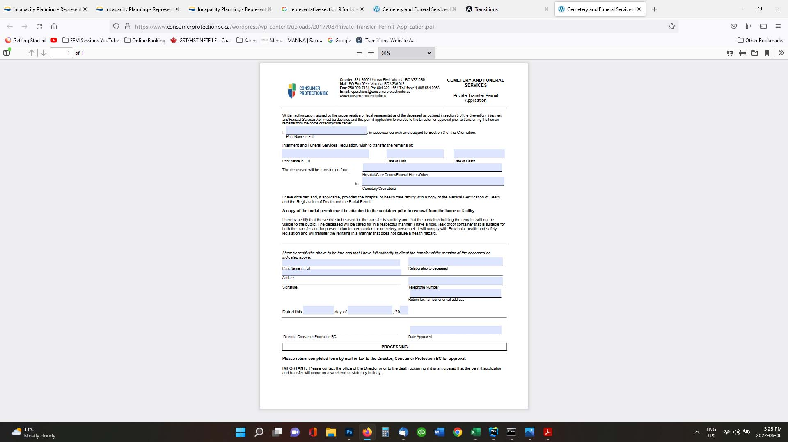

EDITH - Expected Death in the Home
You have the choice to die at home if the request is a reasonable one, if your family supports it and if approved by your Doctor.
You must have completed the No CPR form in order to pursue this avenue. The EDITH Form has been screenshot and is shown here for your information.

"This form allows a Funeral Director to remove your body from a home without pronouncement of death. Pronouncement of death is
not required by BC Law, although it is widely recognized that pronouncement is sound clinical and ethical practice for nurses and
physicians."
"There may be circumstances when pronouncement is difficult or families choose to waive pronouncement. If a person dies in British Columbia, the death must be registered with the Vital Statistics Agency. A Medical Certificate of Death form is completed by the physician within 48 hours after a death. The medical certificate of death is forwarded to the funeral director who will register the death. The funeral director can then issue a death certificate and burial permit."
You can download the A Notification of an Expected Death in the Home form here. It must be completed by the your physician or a nurse practitioner and then sent to the funeral home before your death.

"There may be circumstances when pronouncement is difficult or families choose to waive pronouncement. If a person dies in British Columbia, the death must be registered with the Vital Statistics Agency. A Medical Certificate of Death form is completed by the physician within 48 hours after a death. The medical certificate of death is forwarded to the funeral director who will register the death. The funeral director can then issue a death certificate and burial permit."
You can download the A Notification of an Expected Death in the Home form here. It must be completed by the your physician or a nurse practitioner and then sent to the funeral home before your death.